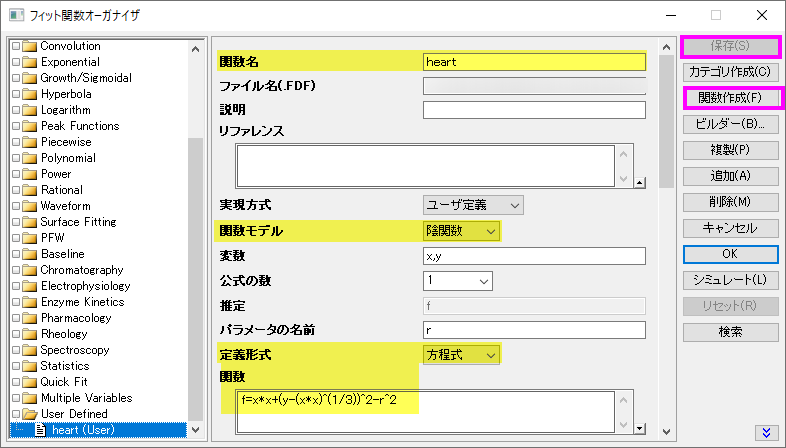
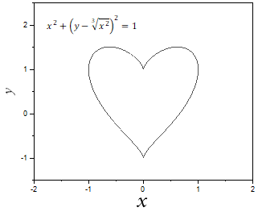

FAQ-1010 陰関数グラフの作成方法
create-implict-function-plot
最終更新日: 2019/5/16
陰関数グラフを作成するには、まず陰関数を定義してからこの関数のシミュレーションを行います。例えば、次の関数のグラフを作成する場合を考えます。
![x^2+(y-\sqrt[3]{x^2})^2=1](../images/How_to_create_an_implicit_function_plot/math-52ba776c218bb759ca54c58a89b507d8.png "x^2+(y-\sqrt[3]{x^2})^2=1")
- ツール:
フィット関数オーガナイザでユーザ定義陰関数を作成します。
- "User Defined"カテゴリに新しいユーザ定義関数を作成します。
- 関数を次の様に定義します。
- 関数名 = Heart
- 関数モデル = 陰関数.
- 変数 = x,y
- 定義形式 = 方程式
- 関数 = f=x*x+(y-(x*x)^(1/3))^2-r^2.
Note: Implicit カテゴリーにある関数"Circle"を参照してどのように陰関数を定義するか確認できます。
- 保存ボタンをクリックして保存します。
- シミュレートボタンをクリックするとこの関数のグラフを作成できます。
|
|  |
- 
キーワード:曲線シミュレーション,
陰関数, 関数グラフ, 円の関数プロット, 楕円関数プロット